How to Use Themes
Timothée Giraud
2026-05-29
Source:vignettes/how_to_use_themes.Rmd
how_to_use_themes.Rmdmf_theme() sets a map theme. A theme is
a set of graphical parameters that are applied to maps created with
mapsf.
These parameters are:
- figure margins and frames,
- background, foreground and highlight colors,
- default sequential and qualitative palettes,
- title options (position, size, banner…).
mapsf offers some builtin themes. It’s possible to
modify an existing theme or to start a theme from scratch. Themes are
persistent across maps produced by mapsf (e.g. they survive
a dev.off() call).
Builtin themes
Here are the builtin themes.
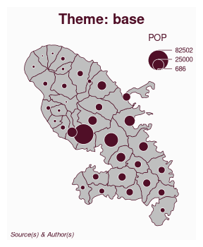
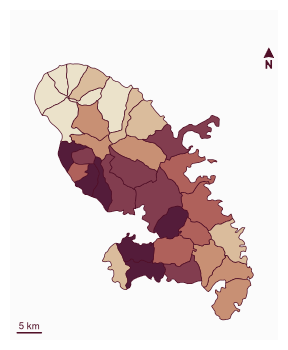
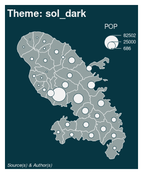
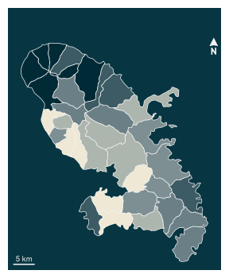
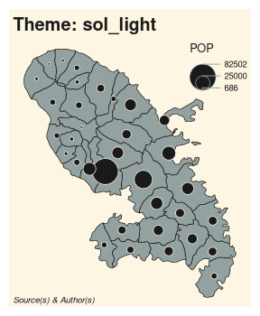
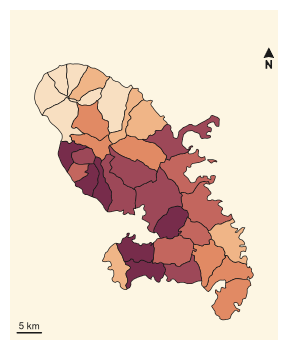
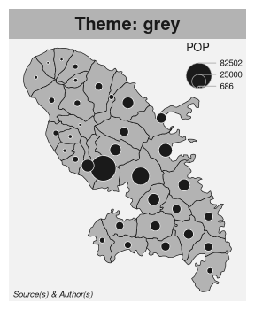
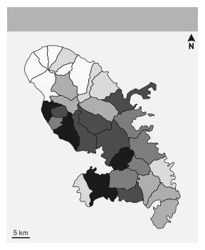
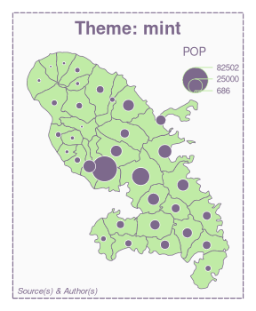
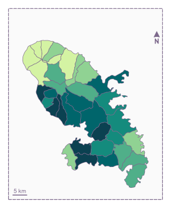
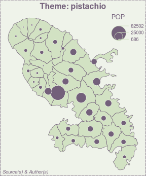
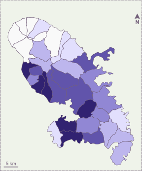
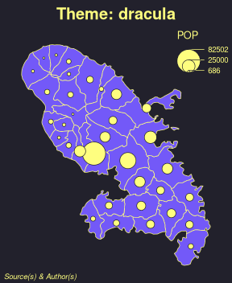
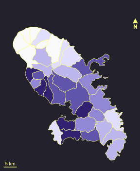
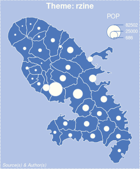
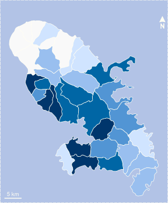
How to modify an existing theme
It is possible to modify an existing theme. In this example we use the “base” theme and modify some title parameters.
library(mapsf)
mtq <- mf_get_mtq()
mf_theme("base", title_banner = TRUE, title_font = 4)
mf_map(mtq)
mf_title('Mofified "default" theme')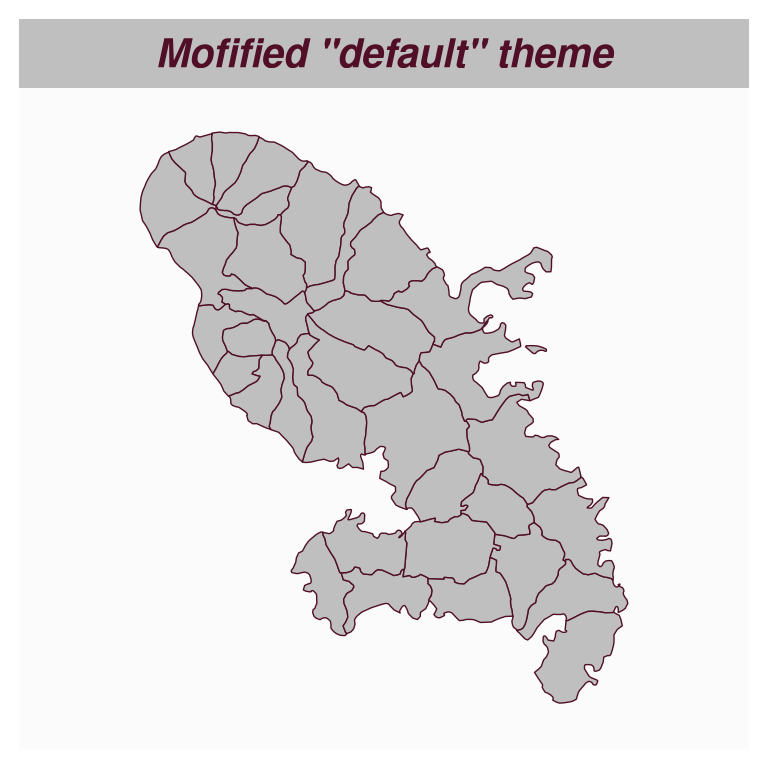
How to create a new theme
It is possible to create a new theme from scratch.
mf_theme(
mar = c(0.1, 0.1, 1.85, 0.1),
title_tab = FALSE,
title_pos = "left",
title_inner = FALSE,
title_line = 1.75,
title_cex = 1.25,
title_font = 4,
title_banner = FALSE,
foreground = "#F1F0E9",
background = "white",
highlight = "#E9762B",
frame = "map",
frame_lwd = 4,
pal_quali = "Dark 3",
pal_seq = colorRampPalette(c("#F1F0E9", "#41644A", "#0D4715"))
)
mf_map(mtq, "MED", "choro")
mf_title("New theme")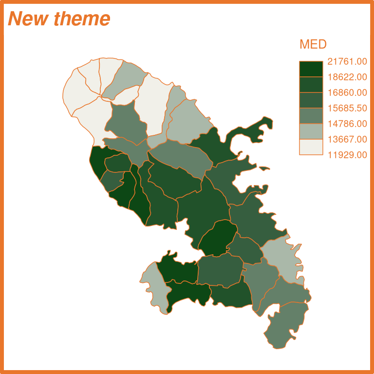
It is also possible to assign a theme to a variable.
blue_theme <- mf_theme("base", background = "lightblue")
green_theme <- mf_theme("base", background = "lightgreen")
mf_theme(blue_theme)
mf_map(mtq)
mf_title("Blue Theme")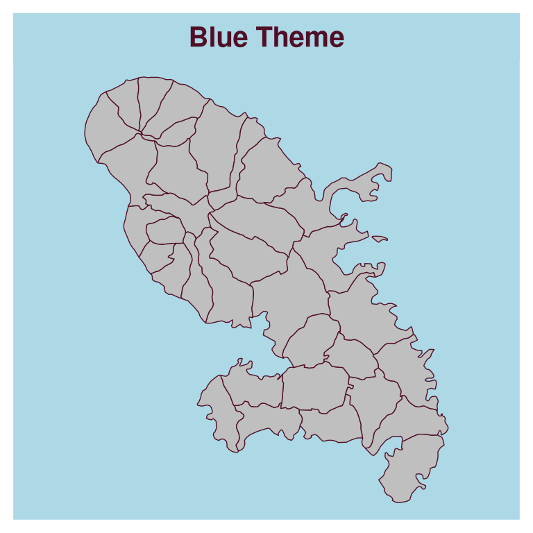
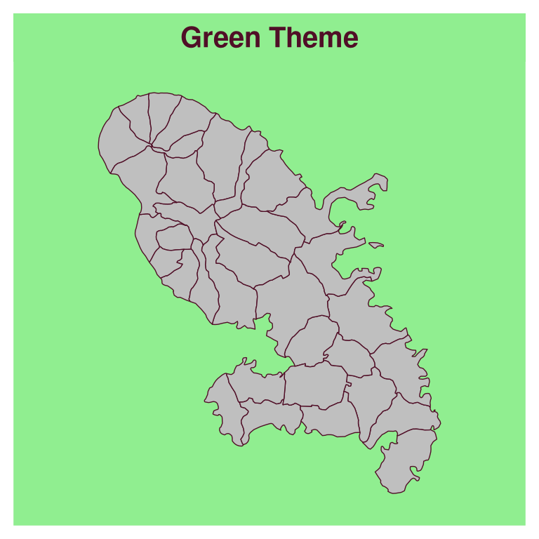
Legacy themes
Although the map theming system has been radically changed in version 1.0.0 of the package, you can still use the old themes by referencing them by name.
mf_theme("default")
#> The following themes are deprecated:
#> 'default', 'brutal', 'ink', 'dark', 'agolalight', 'candy', 'darkula',
#> 'iceberg', 'green', 'nevermind', 'jsk', and 'barcelona'.
#> See the Note section in the help page (?mf_theme).
mf_map(mtq)
mf_title("Legacy default theme")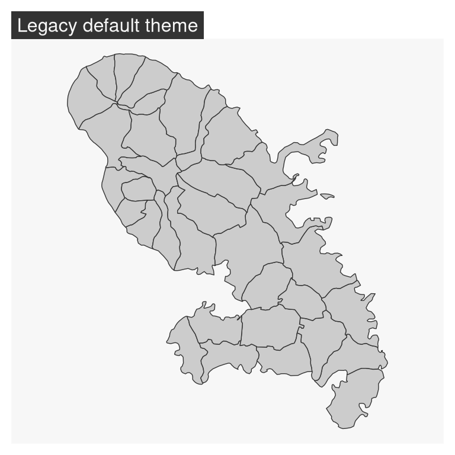